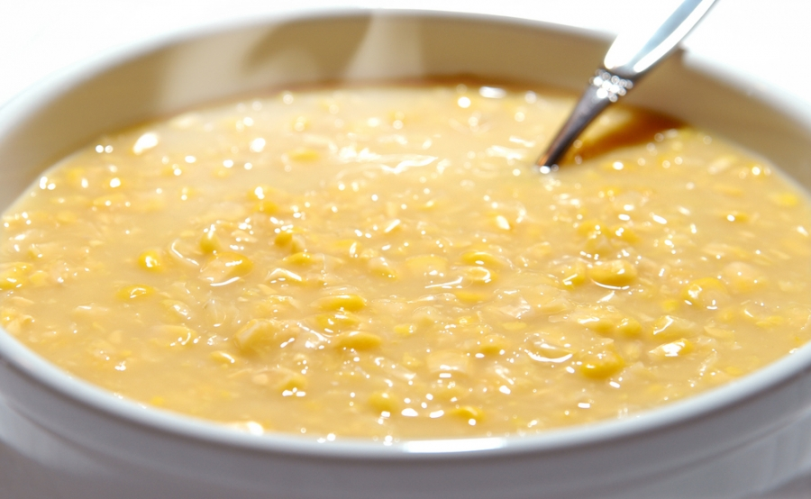

Creme de Milho
Uma receita serve 4 pessoas

Foto do prato pronto (Foto original do site "Ana Maria Brogui")
Ingredientes:
- 2 latas de milho cozido no vapor
- 1 requeijão
- 1 lata de creme de leite
- 300ml de leite
- 1 colher de sopa de maisena
- 1 cebola
- 1 cubo de caldo de legumes
- Manteiga
Modo de Preparo:
- Doure a cebola na manteiga e leve-a no liquidificador com todos os outros ingredientes (Exceto por uma das latas de milho).
- Bata até virar uma mistura homogênea.
- Despeje numa panela a mistura e o milho restante.
- Cozinhe.
- Sirva-se e bom apetitie!